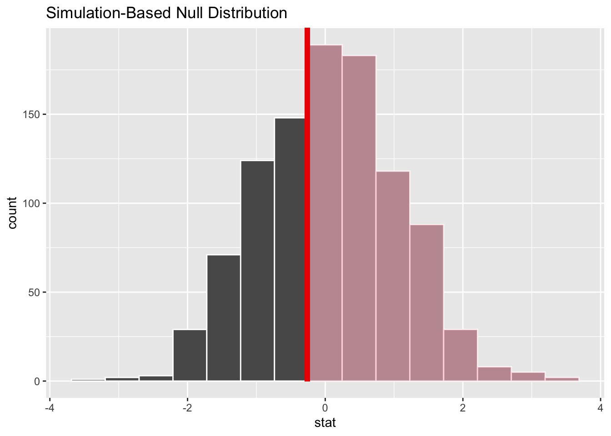

# Just like in component 2, in order to avoid confounding team gender with sport, I need to filter out sports that are only available for one gender.
sports_filtered <- sports |>
filter(
sport != "Baseball",
sport != "Field Hockey",
sport != "Football",
sport != "Gymnastics",
sport != "Rowing",
sport != "Softball",
sport != "Volleyball",
sport != "Wrestling"
)Project description
Results
In this component, you will perform an inferential statistical test that provides evidence regarding your research question. The results of inferential analyses allow you to draw some conclusions about the population that your data came from.
You are required to perform one test to provide evidence for one question.
If your research question involves multiple sub-questions (e.g., is of the form “how does X affect Y and also how does Z affect Y” or “how does X affect Y and also how does X affect Z”), you are welcome and encouraged to perform additional statistical tests to investigate the additional sub-questions. In this case, I will score your tests separately and count only the highest score towards your grade.
Part 1: Analysis plan
- State your research question (from earlier project components, updated as necessary).
How does the number of coaches assigned to US college sports teams vary by the gender of the team?
Provide some information on your explanatory and response variables (from earlier project components, updated as necessary):
What is/are your explanatory (independent) variable(s)? For each, say if it is a numeric variable, a categorical variable with two levels, or a categorical variable with three or more levels.
My explanatory variable is team gender, which is a categorical variable with two levels.
What is/are your response (dependent) variable(s)? For each, say if it is a numeric variable, a categorical variable with two levels, or a categorical variable with three or more levels.
My response variable is the number of coaches assigned to the team, which is a numeric variable.
Hypotheses:
State your null hypothesis.
Teams will have the same number of coaches regardless of team gender.
State your alternative hypothesis.
Men’s teams will be assigned more coaches, on average, than women’s teams.
What statistical test will you use? Explain why this test is the right choice.
I will use a one-tailed T test. T tests are appropriate for comparing means between two groups. My explanatory variable, team gender, is a categorical variable with two levels, and my response variable, number of coaches, is a numeric variable. I will use a one-tailed test because my alternative hypothesis is directional: I have reason to expect that women’s teams will be assigned fewer coaches than men’s teams.
If necessary, make any necessary changes to your data frame (filtering out observations or creating variables) in the code chunk below. This code should be the same as you used in project component 2.
Part 2: Analysis results
- Use the code chunk below to perform the analysis you described in part 1. Display your p value.
# starting with the data frame I modified, I calculate the test statistic for my T test. Because I am comparing the means of two groups, I use the "diff in means" option in "calculate."
sports_teststat <- sports_filtered |>
specify(formula = ncoaches ~ teamgender) |>
hypothesize(null = "independence") |> # I don't actually need this line for a T test and I could delete it if I wanted. For consistency with other tests, I am leaving it be.
calculate(stat = "t",
order = c("men", "women"))
# then I use almost the same code to generate the null distribution
sports_nulldist <- sports_filtered |>
specify(formula = ncoaches ~ teamgender) |>
hypothesize(null = "independence") |>
generate(reps = 1000) |>
calculate(stat = "t",
order = c("men", "women"))
# then I generate the p value. I am using a two-sided test, so direction is "both".
p_sports <- get_p_value(sports_nulldist, obs_stat = sports_teststat, direction = "greater")
# and I display the p value
p_sports$p_value[1] 0.63- Plot your null distribution. Shade the part corresponding to your p value.
# here, we take the null distribution and test statistic we calculated above, use the "visualize" function, and then mark the part of the distribution that is as or more extreme than what we observed
sports_nulldist |>
visualize() +
shade_p_value(obs_stat = sports_teststat, direction = "greater")
Interpret the p value for your test. Using a threshold of p < .05, do you reject or fail to reject your null hypothesis? (~2-3 sentences)
The p value for this test is 0.77, indicating that under the null distribution, there is a 77% chance I would get a sample with a result equal to or more extreme than the one I got. This is well above the cutoff value of p = .05. The difference between the number of coaches assigned to men’s and women’s teams is not statistically significant, and I fail to reject my null hypothesis.
What conclusions can you draw about your research question? (~1-3 sentences)
For sports that are available to both men and women, the number of coaches assigned to men’s and women’s college sports teams are very similar.
What don’t your results tell you about your research question? In other words, what are some reasonable next steps for future research in this area? (~2-4 sentences)
I deliberately filtered sports out of my sample that were only available to one gender so that I could see if there were differences in number of coaches between men’s and women’s teams for sports with both men’s and women’s versions. Now that I know that there are no differences in number of coaches for comparable sports, it would be useful to put the gender-specific sports back in my sample and compare number of coaches between team genders again. It could be that there are overall differences in coaching levels that are driven not by differential assignment of coaches to similar teams, but rather by the fact that different sports with different coaching requirements are made available to men and women.